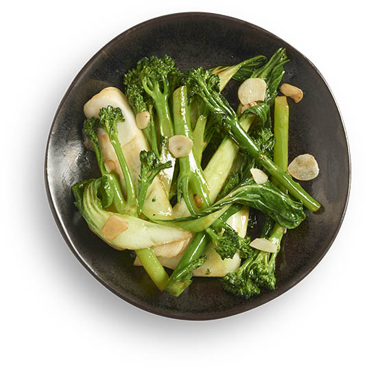

Wok-fried greens

Description
These Wok-Fried Greens are saucy, salty-sweet, garlicky, slightly
caramelised and perfectly crunchy! They're naturally vegan and
gluten-free, and make the perfect quick and easy side dish that's full
of flavour but also happens to be really healthy too.
Ingredients
- 2 tablespoons soy sauce (or tamari if gluten-free)
- 1 teaspoon sugar (or sub any other sweetener)
- 1 tablespoon sesame oil
- Ground black pepper
- 2 tablespoons oil (vegetable or rapeseed)
- 2 garlic cloves
- 150g tenderstem broccoli
- 200g pak choi
Steps
- Mix together all the ingredients for the sauce in a small bowl.
- Heat up the oil in wok or frying pan.
- Add the garlic and fry on a low heat for around 30 seconds, until
fragrant and lightly browned - be very careful not to burn it!
- Add the broccoli and pak choi and the sauce.
- Cook on a medium heat for around 5 minutes, stirring regularly,
until vegetables are cooked to your liking. I like to keep them
slightly crunchy, but for more thoroughly cooked vegetables you can
cook them for longer and cover the wok or frying pan with a lid.
- Taste and add extra soy sauce (or tamari) if necessary.
- Best enjoyed immediately!